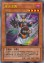
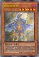

以下是可以在122.0.65.73 23333端口使用的先行卡的列表。下载补丁后即可使用。
使用方法：原版游戏下载补丁后解压至根目录，手机党请自定义数据库（方法自行搜索），暂不支持游侠版游戏。
数据整理：Loki。
脚本作者：ygohack137，以及其他公开发布的先行卡脚本的作者。
卡片列表
| 卡图 | 卡名 | 效果 |
|---|---|---|
 | 天帝 埃忒耳 | [怪兽|效果] 天使/光 [★★★★★★★★] 2800/1000 这张卡可以把1只上级召唤的怪兽解放作上级召唤。 ①：这张卡上级召唤成功的场合才能发动。从手卡·卡组把「帝王」魔法·陷阱卡2种类送去墓地，从卡组把1只攻击力2400以上而守备力1000的怪兽特殊召唤。这个效果特殊召唤的怪兽在结束阶段回到持有者手卡。 ②：这张卡在手卡的场合，对方主要阶段把自己墓地1张「帝王」魔法·陷阱卡除外才能发动。这张卡上级召唤。 |
 | 冥帝 厄瑞玻斯 | [怪兽|效果] 不死/暗 [★★★★★★★★] 2800/1000 这张卡可以把1只上级召唤的怪兽解放作上级召唤。 ①：这张卡上级召唤成功的场合才能发动。从手卡·卡组把「帝王」魔法·陷阱卡2种类送去墓地，从对方的手卡·场上·墓地之中选1张卡回到卡组。 ②：这张卡在墓地的场合，1回合1次，自己·对方的主要阶段从手卡丢弃1张「帝王」魔法·陷阱卡，以自己墓地1只攻击力2400以上而守备力1000的怪兽为对象才能发动。那只怪兽加入手卡。 |
 | 冥帝从骑 哀多斯 | [怪兽|效果] 魔法师/暗 [★★] 800/1000 「冥帝从骑 哀多斯」的②的效果1回合只能使用1次。 ①：这张卡召唤·特殊召唤成功的场合发动。这个回合，自己在通常召唤外加上只有1次，自己主要阶段可以上级召唤。 ②：把墓地的这张卡除外，以「冥帝从骑 哀多斯」以外的自己墓地1只攻击力800/守备力1000的怪兽为对象才能发动。那只怪兽守备表示特殊召唤。这个回合，自己不能从额外卡组把怪兽特殊召唤。 |
 | 天帝从骑 爱迪娅 | [怪兽|效果] 战士/光 [★] 800/1000 「天帝从骑 爱迪娅」的①②的效果1回合各能使用1次。 ①：这张卡召唤·特殊召唤成功的场合才能发动。从卡组把「天帝从骑 爱迪娅」以外的1只攻击力800/守备力1000的怪兽守备表示特殊召唤。这个回合，自己不能从额外卡组把怪兽特殊召唤。 ②：这张卡被送去墓地的场合，以除外的1张自己的「帝王」魔法·陷阱卡为对象才能发动。那张卡加入手卡。 |
 | 泛神的帝王 | [魔法] 「泛神的帝王」的②的效果1回合只能使用1次。 ①：把手卡1张「帝王」魔法·陷阱卡送去墓地才能发动。自己从卡组抽2张。 ②：把墓地的这张卡除外才能发动。从卡组把3张「帝王」魔法·陷阱卡给对方观看，对方从那之中选1张。那1张卡加入自己手卡，剩余回到卡组。 |
 | 真源的帝王 | [陷阱|永续] 「真源的帝王」的②的效果1回合只能使用1次。 ①：1回合1次，以自己墓地2张「帝王」魔法·陷阱卡为对象才能发动。那些卡加入卡组洗切。那之后，自己从卡组抽1张。 ②：这张卡在墓地存在的场合，把这张卡以外的自己墓地1张「帝王」魔法·陷阱卡除外才能发动。这张卡变成通常怪兽（天使族·光·5星·攻1000/守2400）在怪兽区域守备表示特殊召唤（不当作陷阱卡使用）。 |
|  | 永火主教 | [怪兽|效果] 恶魔/暗 [★★★★] 1000/2000 「永火主教」的①的方法的特殊召唤1回合只能有1次。 ①：手卡只有这1张卡的场合，这张卡可以从手卡特殊召唤。 ②：只要自己手卡是0张，自己场上的「永火」怪兽被战斗·效果破坏的场合，可以作为代替把墓地的这张卡除外。 |
 | 隆隆隆左手与右手 | [怪兽|效果] 岩石/地 [★★★★] 0/2200 ①：只要这张卡和这张卡以外的「隆隆隆」怪兽在怪兽区域存在，对方不能选择「隆隆隆」怪兽作为攻击对象，也不能作为效果的对象。 ②：只用包含这张卡的「隆隆隆」怪兽为素材的超量怪兽得到以下效果。 ●这次超量召唤成功时，以对方场上1只表侧攻击表示怪兽为对象才能发动。那只怪兽变成守备表示并把守备力变成0。 |
 | 邪神官 契伦·沙巴 | [怪兽|效果] 爬虫类/暗 [★★★★★★★★] 2500/0 「邪神官 契伦·沙巴」的②的效果1回合只能使用1次。 ①：自己手卡是5张以上的场合，这张卡可以不用解放作召唤。 ②：这张卡被战斗破坏送去墓地时才能发动。这张卡从墓地守备表示特殊召唤。这个效果特殊召唤的这张卡当作调整使用。 |
 | 银河蠕虫 | [怪兽|效果] 昆虫/光 [★★★] 1200/1000 ①：这张卡召唤成功时，自己场上没有这张卡以外的怪兽存在的场合才能发动。从卡组把1只3星以下的「银河」效果怪兽特殊召唤。这个效果特殊召唤的怪兽的效果无效化。 |
 | 永远的淑女 贝阿特丽切 | [怪兽|效果|超量] 天使/光 [★★★★★★] 2500/2800 6星怪兽×2 这张卡也能把手卡1只「彼岸」怪兽送去墓地，在自己场上的「但丁」怪兽上面重叠来超量召唤。这个方法特殊召唤的回合，这张卡的①的效果不能发动。 ①：1回合1次，把这张卡1个超量素材取除才能发动。从卡组选1张卡送去墓地。这个效果在对方回合也能发动。 ②：这张卡被对方破坏送去墓地的场合才能发动。从额外卡组把1只「彼岸」怪兽无视召唤条件特殊召唤。 |
|  | 我我我首领 | [怪兽|效果] 魔法师/暗 [★★★★★★] 2100/2000 ①：只有对方场上才有怪兽存在的场合，这张卡可以不用解放并作为4星怪兽召唤。 ②：这张卡召唤成功时，以「我我我首领」以外的自己墓地最多2只「我我我」怪兽为对象才能发动。那些怪兽特殊召唤。这个回合自己不能作除只用「我我我」怪兽为素材的超量召唤以外的特殊召唤。 ③：场上的这张卡为素材作超量召唤的怪兽得到以下效果。 ●这次超量召唤成功的场合发动。自己从卡组抽1张。 |
 | 歌舞伎龙 | [怪兽|效果] 龙/光 [★★★★★★] 2300/2100 ①：1回合1次，自己怪兽向对方怪兽攻击的伤害计算前才能发动。那只对方怪兽的表示形式变更。 ②：1回合1次，对方怪兽向自己怪兽攻击的伤害计算前才能发动。那只自己怪兽的表示形式变更。 |
 | 古神 克图格亚 | [怪兽|效果|同调] 念动力/炎 [★★★★] 2200/200 调整＋调整以外的怪兽1只以上 ①：这张卡同调召唤成功的场合才能发动。场上的4阶的超量怪兽全部回到持有者的额外卡组。②：这张卡为素材的融合召唤成功的场合发动。自己从卡组抽1张。 ③：场上的这张卡为素材作超量召唤的怪兽得到以下效果。 ●这次超量召唤成功的场合发动。自己从卡组抽1张。 |
 | 火箭手 | [陷阱] 「火箭手」的①②的效果1回合只能有1次使用其中任意1个。 ①：以自己场上1只攻击力800以上的攻击表示怪兽为对象才能把这张卡发动。这张卡当作攻击力上升800的装备卡使用给那只怪兽装备。 ②：把装备的这张卡送去墓地，以场上1张表侧表示的卡为对象才能发动。那张卡破坏。那之后，这张卡装备过的怪兽攻击力变成0，不能把表示形式变更。 |
 | P·M 捕获者 | [怪兽|效果|灵摆] 不死/暗 [★★★★] 1800/0 5/5 ←5 【灵摆】 5→ ①：自己的不死族怪兽灵摆召唤成功时才能发动。那些怪兽在这个回合不会被战斗·效果破坏。 【怪兽效果】 ①：这张卡战斗破坏怪兽的场合，以自己墓地1只灵摆怪兽为对象才能发动。那只怪兽加入手卡。 |
 | 魔方体人 | [怪兽|效果] 雷/光 [★★★★] 600/1900 ①：1回合1次，自己主要阶段才能发动。掷1次骰子。只要这只怪兽在场上表侧表示存在，双方不能把和出现的数目相同等级的怪兽召唤·特殊召唤。 |
 | 古生物 皮卡虫 | [陷阱] ①：从手卡丢弃1张「古生物」卡。那之后，自己从卡组抽2张。 ②：场上的陷阱卡发动时，连锁那个发动这个效果才能从墓地发动。这张卡变成通常怪兽（水族·水·2星·攻1200/守0）在怪兽区域特殊召唤（不当作陷阱卡使用）。这个效果特殊召唤的这张卡不受怪兽的效果影响，从场上离开的场合除外。 |
 | 幻梦境 | [魔法|场地] 「幻梦境」在1回合只能发动1张。 ①：得到场上的怪兽种类的以下效果。 ●融合：1回合1次，自己的手卡·场上的怪兽被效果送去墓地的场合才能发动。自己从卡组抽1张。 ●同调：怪兽召唤·特殊召唤成功时自己才能把这个效果发动。那只怪兽的等级上升1星。 ●超量：自己结束阶段发动。场上的等级最高的怪兽破坏。 |
 | 缝制恐龙 | [怪兽|效果] 恶魔/地 [★★★★] 0/0 ①：这张卡不会被战斗破坏。 ②：这张卡被选择作为攻击对象的场合发动。这张卡的攻击力·守备力上升1000。 ③：这张卡攻击的伤害计算后发动。这张卡的②的效果上升的数值回到0。 |
 | 业火之重骑士 | [怪兽|效果|二重] 不死/炎 [★★★★] 1800/200 ①：这张卡只要在场上·墓地存在，当作通常怪兽使用。 ②：可以把场上的当作通常怪兽使用的这张卡作为通常召唤作再1次召唤。那个场合这张卡变成当作效果怪兽使用并得到以下效果。 ●这张卡向特殊召唤的怪兽攻击的伤害步骤开始时才能发动。那只怪兽除外。 |
 | 外神 阿撒托斯 | [怪兽|效果|超量] 恶魔/暗 [★★★★★] 2400/0 5星怪兽×3 这张卡也能在自己场上的「外神」超量怪兽上面把这张卡重叠来超量召唤。这张卡不能作为超量召唤的素材。 ①：这张卡超量召唤成功的回合，对方不能把怪兽的效果发动。 ②：这张卡有融合·同调·超量怪兽全部在作为超量素材的场合，把这张卡1个超量素材取除才能发动。对方场上的卡全部破坏。 |
 | 古生物 拟油栉虫 | [陷阱] ①：以场上1张魔法·陷阱卡为对象才能发动。那张卡破坏。 ②：场上的陷阱卡发动时，连锁那个发动这个效果才能从墓地发动。这张卡变成通常怪兽（水族·水·2星·攻1200/守0）在怪兽区域特殊召唤（不当作陷阱卡使用）。这个效果特殊召唤的这张卡不受怪兽的效果影响，从场上离开的场合除外。 |
 | 胡萝卜人 | [怪兽|效果] 植物/暗 [★★★★] 1900/0 「胡萝卜人」的效果1回合只能使用1次。 ①：这张卡在墓地存在的场合，从手卡以及自己场上的表侧表示怪兽之中把「胡萝卜人」以外的1只植物族怪兽送去墓地才能发动。这张卡从墓地特殊召唤。 |
 | 禁断的偏方三八面体 | [魔法] 「禁断的偏方三八面体」在1回合只能发动1张。自己场上融合·同调·超量怪兽那之中只有2种类的场合，根据那组合的以下效果适用。 ●融合·同调怪兽：从额外卡组把1只「外神」超量怪兽特殊召唤，把这张卡在下面重叠作为超量素材。 ●同调·超量怪兽：从额外卡组把1只「旧神」融合怪兽特殊召唤。 ●超量·融合怪兽：从额外卡组把1只「古神」同调怪兽特殊召唤。 |
 | 灵语鸟 | [怪兽|效果] 鸟兽/风 [★★★★] 200/2000 ①：这张卡1回合只有1次不会被战斗破坏。 ②：这张卡灵摆召唤成功时才能发动。从卡组把1只仪式怪兽或者1张仪式魔法卡加入手卡。 |
 | 龙落亲 | [怪兽|效果|调整] 幻龙/水 [★★★★★★★] 2100/1400 这张卡不用幻龙族怪兽的效果不能特殊召唤。「龙落亲」的效果1回合可以使用最多3次。 ①：自己主要阶段才能发动。这张卡的等级下降1星，在自己场上把1只「龙落衍生物」（幻龙族·水·1星·攻300/守200）特殊召唤。 |
 | 灵摆延缓 | [魔法|速攻] ①：这个回合，自己以及对方的灵摆区域的卡不会被对方的效果破坏，以灵摆区域的卡为对象的对方发动的效果无效。 |
 | 纸箱拳手 | [怪兽|效果] 战士/地 [★★★★] 1800/1000 ①：这张卡战斗破坏对方怪兽送去墓地时才能发动。给这张卡放置1个指示物。 ②：把有指示物2个以上放置的这张卡送去墓地才能发动。从卡组把1只地属性怪兽特殊召唤。 ③：这张卡被战斗·效果破坏的场合，可以作为代替把这张卡的1个指示物取除。 |
 | 古生物 奇虾 | [怪兽|效果|超量] 水/水 [★★] 2400/0 2星怪兽×3只以上 ①：这张卡不受其他怪兽的效果影响。 ②：1回合1次，自己的魔法与陷阱区域的陷阱卡被送去墓地的场合才能发动。自己卡组最上面的卡翻开，那是陷阱卡的场合，加入手卡。不是的场合，送去墓地。 ③：这张卡有陷阱卡在作为超量素材的场合，1回合1次，把这张卡1个超量素材取除，以场上1张卡为对象才能发动。那张卡破坏。这个效果在对方回合也能发动。 |
 | 古生物 怪诞虫 | [陷阱] ①：以场上1只表侧表示怪兽为对象才能发动。那只怪兽的攻击力·守备力直到回合结束时变成一半。 ②：场上的陷阱卡发动时，连锁那个发动这个效果才能从墓地发动。这张卡变成通常怪兽（水族·水·2星·攻1200/守0）在怪兽区域特殊召唤（不当作陷阱卡使用）。这个效果特殊召唤的这张卡不受怪兽的效果影响，从场上离开的场合除外。 |
 | 古神 哈斯塔 | [怪兽|效果|同调] 爬虫类/风 [★★★★] 2300/1000 调整＋调整以外的怪兽1只以上 ①：这张卡从怪兽区域送去墓地的场合，以对方场上1只表侧表示怪兽为对象才能发动。墓地的这张卡当作装备卡使用给那只怪兽装备。装备怪兽不能攻击，效果无效化。 ②：用这张卡的效果给对方怪兽装备的这张卡从场上离开的场合发动。自己得到这张卡装备过的对方怪兽的控制权。 |
 | 旧神 努茨 | [怪兽|效果|融合] 天使/光 [★★★★] 2500/1200 同调怪兽＋超量怪兽 把自己场上的上记卡送去墓地的场合才能特殊召唤（不需要「融合」）。自己对「旧神 努茨」1回合只能有1次特殊召唤。 ①：1回合1次，自己主要阶段才能发动。从手卡把1只4星怪兽特殊召唤。 ②：这张卡被送去墓地的场合，以场上1张卡为对象才能发动。那张卡破坏。 |
 | 魔犀族战士 | [怪兽|效果] 恶魔/地 [★★★] 1400/900 「魔犀族战士」的②的效果1回合只能使用1次。 ①：只要这张卡在怪兽区域存在，「魔犀族战士」以外的自己场上的恶魔族怪兽不会被战斗·效果破坏。 ②：这张卡被送去墓地的场合才能发动。从卡组把「魔犀族战士」以外的1只恶魔族怪兽送去墓地。 |
 | X射线穿刺龙 | [怪兽|效果] 龙/炎 [★★★★] 1700/200 「X射线穿刺龙」的①②的效果1回合各能使用1次。 ①：自己主要阶段把自己墓地的龙族怪兽和幻龙族怪兽各1只除外才能发动。从手卡·卡组把1只「X射线穿刺龙」特殊召唤。 ②：这张卡从场上送去墓地的场合才能发动。给与对方500伤害。 |
 | 半人犬 | [怪兽|效果] 兽战士/炎 [★★★] 1500/200 ①：1回合1次，这张卡和对方怪兽进行战斗的伤害计算时才能发动。从手卡·卡组把1只兽族·兽战士族·鸟兽族怪兽送去墓地，这张卡的攻击力直到战斗阶段结束时上升送去墓地的那只怪兽的等级×100。 |
 | 古生物 加拿大虫 | [陷阱] ①：以对方场上1只表侧表示怪兽为对象才能发动。那只怪兽变成里侧守备表示。 ②：场上的陷阱卡发动时，连锁那个发动这个效果才能从墓地发动。这张卡变成通常怪兽（水族·水·2星·攻1200/守0）在怪兽区域特殊召唤（不当作陷阱卡使用）。这个效果特殊召唤的这张卡不受怪兽的效果影响，从场上离开的场合除外。 |
 | 调律之魔术师 | [怪兽|效果|调整] 魔法师/暗 [★] 0/0 「调律之魔术师」的①的效果1回合只能使用1次。 ①：这张卡在手卡·墓地存在，自己的灵摆区域有2张「魔术师」卡存在的场合才能发动。这张卡特殊召唤。这个效果特殊召唤的这张卡从场上离开的场合除外。 ②：这张卡召唤·特殊召唤成功的场合发动。对方回复400基本分，那之后自己受到400伤害。 |
 | 娱乐伙伴 琴键猴 | [怪兽|效果|灵摆] 兽/地 [★★★★★★] 1000/2400 1/1 ←1【灵摆】 1→ 「娱乐伙伴 琴键猴」的②的灵摆效果1回合只能使用1次。 ①：另一边的自己的灵摆区域没有「娱乐伙伴」卡存在的场合，这张卡的灵摆刻度变成4。 ②：这张卡发动的回合的自己主要阶段才能发动。从卡组把1只4星以下的「娱乐伙伴」怪兽加入手卡。 【怪兽效果】 ①：把这张卡从手卡丢弃才能发动。手卡1只「娱乐伙伴」怪兽或者「异色眼」怪兽给对方观看。这个回合，那只怪兽以及自己手卡的同名怪兽的等级下降1星。 |
 | 娱乐伙伴 鱼饵大头龟 | [怪兽|效果|灵摆] 爬虫类/水 [★★★] 800/1200 3/3 ←3【灵摆】 3→ ①：1回合1次，自己主要阶段才能发动。手卡1只「娱乐伙伴」怪兽或者「异色眼」怪兽给对方观看。这个回合，那只怪兽以及自己手卡的同名怪兽的等级下降1星。 【怪兽效果】 ①：这张卡被战斗破坏时才能发动。把让这张卡破坏的怪兽破坏。 |
 | 超重武者 心构-A | [怪兽|效果] 机械/地 [★★★] 100/2100 自己墓地有魔法·陷阱卡存在的场合，这张卡不能召唤·反转召唤。 ①：自己墓地没有魔法·陷阱卡存在，自己受到战斗伤害时才能发动。这张卡从手卡特殊召唤。这个效果特殊召唤的这张卡在这个回合不会被战斗·效果破坏。 |
 | 超重辉将 翡翠-E | [怪兽|效果|灵摆] 机械/地 [★★★★★★★★] 1800/2800 1/1 ←1【灵摆】 1→ ①：自己不是「超重武者」怪兽不能灵摆召唤。这个效果不会被无效化。 ②：1回合1次，以自己场上1只「超重武者」怪兽为对象才能发动。那只怪兽的等级上升1星。 【怪兽效果】 这张卡在规则上也当作「超重武者」卡使用。这张卡可以把1只「超重武者」怪兽解放作上级召唤。 ①：这张卡召唤·特殊召唤成功时才能发动。这张卡的表示形式变更。 ②：这张卡可以用表侧守备表示的状态作出攻击。那个场合，这张卡用守备力当作攻击力使用进行伤害计算。 |
 | 超重辉将 珊瑚-5 | [怪兽|效果|灵摆] 机械/地 [★] 300/500 8/8 ←8【灵摆】 8→ ①：自己墓地有魔法·陷阱卡存在的场合，这张卡的灵摆刻度变成4。 ②：1回合1次，自己的「超重武者」怪兽战斗破坏对方怪兽时才能发动。那只怪兽只再1次可以继续攻击。 【怪兽效果】 这张卡在规则上也当作「超重武者」卡使用。「超重辉将 珊瑚-5」的怪兽效果1回合只能使用1次。 ①：自己墓地没有魔法·陷阱卡存在的场合，把自己场上最多2只「超重武者」怪兽解放才能发动。自己从卡组抽出解放的数量。 |
 | 幻奏的歌姬 索萝 | [怪兽|效果] 天使/光 [★★★★] 1600/1000 ①：对方场上有怪兽存在，自己场上没有怪兽存在的场合，这张卡可以从手卡特殊召唤。 ②：这张卡被战斗破坏送去墓地时才能发动。从卡组把「幻奏的歌姬 索萝」以外的1只「幻奏」怪兽特殊召唤。 |
 | 黄昏之忍者-新月 | [怪兽|效果] 战士/暗 [★★★★] 1500/100 「黄昏之忍者-新月」的②的效果1回合只能使用1次。 ①：只要这张卡在怪兽区域存在，对方不能把其他的「忍者」怪兽作为攻击对象，也不能作为效果的对象。 ②：这张卡被战斗或者对方的效果破坏送去墓地的场合才能发动。从卡组把「黄昏之忍者-新月」以外的1只「忍者」怪兽加入手卡。 |
 | 黄昏之忍者将军-月牙 | [怪兽|效果] 战士/暗 [★★★★★★★★] 2000/3000 这张卡可以把1只「忍者」怪兽解放作上级召唤。「黄昏之忍者将军-月牙」的效果1回合只能使用1次。 ①：这张卡在场上攻击表示存在的场合，以「黄昏之忍者将军-月牙」以外的自己墓地2只「忍者」怪兽为对象才能发动。这张卡变成守备表示，作为对象的怪兽特殊召唤。 |
 | 使破坏剑的高手-破坏剑士 | [怪兽|效果] 战士/地 [★★★★★★★] 2600/2300 ①：这张卡的卡名只要在场上·墓地存在当作「破坏剑士」使用。 ②：对方场上的怪兽被战斗·效果破坏送去墓地的场合，以破坏的那1只怪兽为对象才能发动。那只怪兽当作装备卡使用给这张卡装备。 ③：1回合1次，把这张卡装备的1张怪兽卡送去墓地才能发动。和送去墓地的那张怪兽卡相同种族的对方场上的怪兽全部破坏。 |
 | 妖刀-不知火 | [怪兽|效果|调整] 不死/炎 [★★] 800/0 「妖刀－不知火」的效果1回合只能使用1次。 ①：这张卡在墓地存在的场合，以调整以外的自己墓地1只不死族怪兽为对象才能发动。那只怪兽和这张卡从墓地除外，把持有和那2只的等级合计相同等级的1只不死族同调怪兽从额外卡组特殊召唤。这个效果在这张卡送去墓地的回合不能发动。 |
 | 异色眼重力龙 | [怪兽|效果|仪式] 龙/地 [★★★★★★★] 2800/2500 「异色眼降临」降临。「异色眼重力龙」的①的效果1回合只能使用1次。 ①：这张卡特殊召唤成功时才能发动。对方场上的魔法·陷阱卡全部回到持有者手卡。对方不能对应这个效果的发动把魔法·陷阱·怪兽的效果发动。 ②：只要这张卡在怪兽区域存在，对方若不支付500基本分则不能把卡的效果发动。 |
 | 御用皇帝 | [怪兽|效果|融合] 战士/地 [★★★★★★★★★★] 3300/2500 战士族·地属性的同调怪兽×2 ①：这张卡或者原本持有者是对方的自己怪兽战斗破坏对方怪兽送去墓地时才能发动。破坏的那只怪兽在自己场上特殊召唤。 ②：对方把怪兽特殊召唤时，把自己场上1只战士族·地属性的同调怪兽解放才能发动。得到那些怪兽的控制权。 ③：表侧表示的这张卡从场上离开的场合发动。自己场上的全部怪兽的控制权回归原本持有者。 |
 | 龙破坏之剑士-破坏剑士 | [怪兽|效果|融合] 战士/光 [★★★★★★★★] 2800/2500 「破坏剑士」＋龙族怪兽 这张卡不用融合召唤不能特殊召唤。 ①：这张卡不能直接攻击。 ②：这张卡的攻击力·守备力上升对方的场上·墓地的龙族怪兽数量×1000。 ③：只要这张卡在怪兽区域存在，对方场上的龙族怪兽变成守备表示，对方不能把龙族怪兽的效果发动。 ④：这张卡向守备表示怪兽攻击的场合，给与攻击力超过那个守备力的数值的战斗伤害。 |
 | 觉醒之魔导剑士 | [怪兽|效果|同调] 魔法师/暗 [★★★★★★★★] 2500/2000 调整＋调整以外的怪兽1只以上 「觉醒之魔导剑士」的①的效果1回合只能使用1次。 ①：「魔术师」灵摆怪兽作为素材让这张卡同调召唤成功的场合，以自己墓地1张魔法卡为对象才能发动。那张卡加入手卡。 ②：这张卡战斗破坏对方怪兽时才能发动。给与对方那只怪兽的原本攻击力数值的伤害。 |
 | 刀神-不知火 | [怪兽|效果|同调] 不死/炎 [★★★★★★] 2500/0 不死族调整＋调整以外的不死族怪兽1只以上 自己对「刀神-不知火」1回合只能有1次特殊召唤。 ①：1回合1次，以除外的1只自己的不死族怪兽为对象才能发动。那只怪兽回到卡组，持有那个攻击力以下的攻击力的对方场上的怪兽全部变成守备表示。这个效果在对方回合也能发动。 ②：这张卡被除外的场合，以对方场上1只怪兽为对象才能发动。那只怪兽的攻击力下降500。 |
 | 破坏剑士融合 | [魔法|速攻] 「破坏剑士融合」的①②的效果1回合各能使用1次。 ①：从自己手卡以及自己·对方场上把融合怪兽卡决定的融合素材怪兽送去墓地，把以「破坏剑士」为融合素材的那1只融合怪兽从额外卡组融合召唤。 ②：这张卡在墓地存在的场合，把1张手卡送去墓地才能发动。墓地的这张卡加入手卡。 |
 | 龙呼相争 | [魔法|速攻] 「龙呼相争」在1回合只能发动1张。 ①：从卡组选1只「龙剑士」灵摆怪兽和1只「龙魔王」灵摆怪兽给对方观看，对方从那之中随机选1只。对方选的灵摆怪兽在自己的灵摆区域放置或特殊召唤。剩下的灵摆怪兽表侧表示加入自己的额外卡组。 |
 | 异色眼降临 | [魔法|仪式] 龙族的仪式怪兽的降临必需。「异色眼降临」在1回合只能发动1张。 ①：等级合计直到变成仪式召唤的怪兽的等级以上为止，把自己的手卡·场上的灵摆怪兽解放，从自己的手卡·墓地把1只龙族的仪式怪兽仪式召唤。对方场上有怪兽2只以上存在，自己场上没有怪兽存在的场合，自己的额外卡组的「异色眼」怪兽也能作为解放的代替而送去墓地。 |
 | 龙之束缚 | [陷阱|永续] 以自己场上1只攻击力·守备力是2500以下的龙族怪兽为对象才能把这张卡发动。 ①：只要这张卡在魔法与陷阱区域存在，双方不能把作为对象的怪兽的原本攻击力以下的怪兽特殊召唤。 ②：作为对象的怪兽从场上离开时这张卡破坏。 |
 | 抗拒苏生 | [陷阱] ①：对方怪兽的直接攻击宣言时才能发动。战斗阶段结束。那之后，可以从自己墓地选调整和同调怪兽各1只特殊召唤。这个效果特殊召唤的怪兽的效果无效化。 |
 | 幻影骑士团 沾尘袍 | [怪兽|效果] 战士/暗 [★★★] 800/1000 「幻影骑士团 沾尘袍」的①②的效果1回合各能使用1次。 ①：这张卡在场上攻击表示存在的场合，以场上1只暗属性怪兽为对象才能发动。这张卡变成守备表示，作为对象的怪兽的攻击力·守备力直到对方回合结束时上升800。 ②：把墓地的这张卡除外才能发动。从卡组把「幻影骑士团 沾尘袍」以外的1张「幻影骑士团」卡加入手卡。 |
 | 幻影骑士团 破手套 | [怪兽|效果] 战士/暗 [★★★] 1000/500 「幻影骑士团 破手套」的①②的效果1回合各能使用1次。 ①：场上的这张卡为素材作超量召唤的暗属性怪兽得到以下效果。 ●这次超量召唤成功的场合发动。这张卡的攻击力上升1000。 ②：把墓地的这张卡除外才能发动。从卡组把1张「幻影骑士团」卡或者「幻影」魔法·陷阱卡送去墓地。 |
 | 幻影骑士团 断碎剑 | [怪兽|效果|超量] 战士/暗 [★★★] 2000/1000 3星怪兽×2 ①：1回合1次，把这张卡1个超量素材取除，以自己以及对方场上的卡各1张为对象才能发动。那些卡破坏。 ②：超量召唤的这张卡被破坏的场合，以自己墓地2只相同等级的「幻影骑士团」怪兽为对象才能发动。那些怪兽特殊召唤。这个效果特殊召唤的怪兽的等级上升1星。这个效果的发动后，直到回合结束时自己不是暗属性怪兽不能特殊召唤。 |
 | 幻影雾剑 | [陷阱|永续] 以场上1只效果怪兽为对象才能把这张卡发动。「幻影雾剑」的②的效果1回合只能使用1次。 ①：只要这张卡在魔法与陷阱区域存在，作为对象的怪兽不能攻击，不会成为攻击对象，效果无效化。那只怪兽从场上离开时这张卡破坏。 ②：把墓地的这张卡除外，以自己墓地1只「幻影骑士团」怪兽为对象才能发动。那只怪兽特殊召唤。这个效果特殊召唤的怪兽从场上离开的场合除外。 |